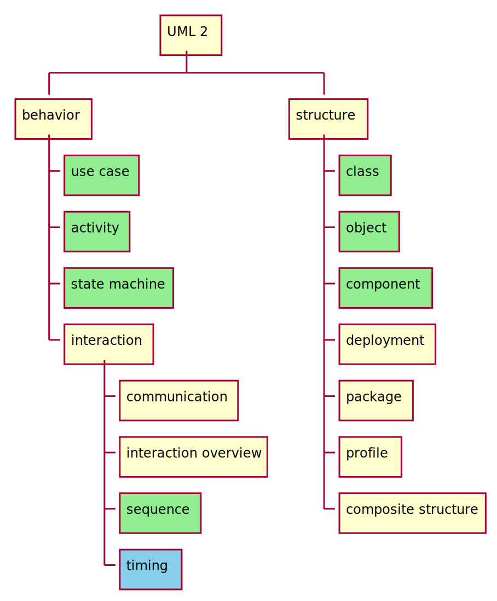

Software Engineering
week 1
readings
- Software Architecture Metaphors - by Lisa Stähli
- What is Software Architecture? - by Kevlin Henney
- Practical Tips on Software Architecture Design, Part One - by Marco Bürckel
- Practical Tips on Software Architecture Design, Part Two - by Marco Bürckel
- Why Write ADRs - by Eli Perkins
week 2
readings
scrum
zombie scrum
kanban
week 3
readings
requirement analysis
- SDLC Guide: Requirement Analysis in Software Engineering - by Arkadiusz Krysik
- What’s in a Story? - by Daniel Terhorst-North
- Making sense of MVP (Minimum Viable Product) – and why I prefer Earliest Testable/Usable/Lovable - by Henrik Kniberg
- How to Carry Out a Requirements Analysis - by Kelechi Udoagwu
user story mapping
- Jeff Patton’s original
blogpost
- Five common story mapping mistakes - by Jeff Patton
- The Ultimate Guide to User Story Mapping - by Nick Muldoon
- Mapping User Stories in Agile - by Anna Kaley
- Quickstart Guide to User Story Mapping
optional
week 4
readings
UML
C4 model
- C4 model
- The C4 Model for Software Architecture - by Simon Brown
optional
week 5
readings
- The Full-stack Software Design & Architecture Map - by Khalil Stemmler
SOLID
- A Solid Guide to SOLID Principles - by Sam Millington
- SOLID Design Principles - Devopedia
inversion of control
- Inversion Of Control - by Martin Fowler
- Don’t Call Us, We’ll Call You: The Hollywood Principle for Maintainable Code - by Teni Gada
topologies
- Hexagonal Architecture - by Sven Woltmann
- The Onion Architecture - by Jeffrey Palermo
MVC-MVP-MVVM
- MVC vs MVP vs MVVM - by Priya Pedamkar
- Alternatives To MVC - by Anthony Ferrara
optional
- The Composition Over Inheritance
Principle
- with Python examples
- Railway oriented programming - by Scott Wlaschin
week 6
readings
- riskstorming.com
- OWASP Risk Rating Methodology
- Story points and estimation - by Dan Radigan
- What Scrum Says About Estimates
- How to create a Minimal, Reproducible Example
week 7
readings
- What is wireframing? A complete guide - by Louise Bruton
- UI Prototypes
week 9
- code quality
- code review
readings
- Code Smells - by Jeff Atwood
- How To Write Unmaintainable Code - by Roedy Green
- Code Review Guidelines for Humans - by Philipp Hauer
schedule
| week | date | lecture | practical class |
|---|---|---|---|
| 1 | 2024-09-10 | intro, software architecture, SDLC | |
| 2 | 2024-09-17 | scrum, kanban | |
| 3 | 2024-09-24 | requirement analysis, user story mapping | project assignment |
| 4 | 2024-10-01 | UML, C4 | project workshop |
| 5 | 2024-10-08 | design patterns | project workshop |
| 6 | 2024-10-15 | interfaces, implementation planning | project workshop |
| 7 | 2024-10-22 | clean clode, legacy code, review | project workshop |
| 8 | 2024-10-29 | school holiday | |
| 9 | 2024-11-05 | testing, review | VCS basics |
| 10 | 2024-11-12 | dependency management | project workshop |
| 11 | 2024-11-19 | CI, automatization, devops | project workshop |
| 12 | 2024-11-26 | summary, course feedback | project workshop |
| 13 | 2024-12-03 | midterm | project demo |
| 14 | 2024-12-10 | no planned lecture |
materials
- available online in two formats
- hangout
- presentation
- pintergreg.github.io/software-engineering

tools
- diagram drawing:
- whiteboard:
- kanban board
- code hosting / task management
program vs. software
A computer program is a sequence or set of instructions in a programming language for a computer to execute. It is one component of software, which also includes documentation and other intangible components.
ISO/IEC 2382:2015 via Wikipedia (Wikipedia contributors, 2024a)

program is like a recipe
There is a metaphor saying that a program is like a recipe.
The computer follows the instructions of a program as the cook follows the instruction in a recipe.
Consequently programming is like creating a recipe.
for i in range(1, 101):
if i % 15 == 0:
print("" + "FizzBuzz")
elif i % 3 == 0:
print("" + "Fizz")
elif i % 5 == 0:
print("" + "Buzz")
else:
print(i)
It is easy to read this code snippet and figure out what it does, but constructing an algorithm might be more complicated.
It contains a loop going from 1 to 100 (ranges are not closed in Python, so 101 is excluded and the range step is 1 by default). If the loop variable is dividable by 15, “FizzBuzz” is printed to the screen. If it is only dividable by 3 “Fizz” is printed, if only by 5 “Buzz” is printed. In any other cases the number id printed.
Writing a computer program requires a nuanced understanding of the problem being solved by the computer program, pros and cons of various approaches, etc. It also requires the knowledge and expertise to describe those steps in a manner amenable to execution by a computer.
programming vs. software development

- does that mean a program is not
- planned
- documented
- tested
- verified?
- the main difference is the formality of the process
- which correlates the complexity of the project
A program code is only a part of a software. Programming is more or less a synonym to coding.
As a software is more than just the code, software development is more than just coding/programming. The work is planned, documented, tested, verified, and framed by a process.
If programming is like creating a recipe, software development is more like running a restaurant. One should come up with recipes, cook the food, but the restaurant also needs constant ingredient logistics and preparation, food serving, marketing, cleaning etc.
software development is like building a house
- the software development is often compared to house building
- which is more like a sequential process
- after the planning (including building permit, budget, etc.), the
foundation is built first, then walls and the roof
- these phases cannot be swapped
- after the construction is finished, the contractor leaves the site

{kind=link}
maintenance?
software development not is like building a house
a software does not have to obey the laws of physics
- in software development you can start with the door of the second floor bathroom
- the size of a room can be changed during the construction – even several times
software development is like gardening
- a garden needs to be taken care of constantly
- without attention the garden will decay
- maintenance is part of software development
- software rots
based on Software Architecture Metaphors by Lisa Stähli (Stähli, 2021)
Another famous metaphor is the gardening. The most important aspect of the gardening is that a garden needs to be taken care of constantly. Without attention the garden will decay, which is also true for the software; the software can rot.
There are two types of software rot: dormant rot and active rot.
what is software rot?
Software rot (or software entropy) is the degradation, deterioration, or loss of the use or performance of software over time (Wikipedia contributors, 2024b).
dormant rot: the software in question is not changed, but as the environment evolves, it eventually becomes dysfunctional

Environment change can be either software or hardware. The operating system, a software framework or even a hardware can be outdated to
The photo shows the San Fransico Muni metro, which still uses floppy disks to load its Automatic Train Control System every morning. It is planned to replace by the end of the decade. The system works without any problems, but the risk of failure is getting higher. (Harding, 2024)
active rot
- the software has undergone constant modifications but gradually loses its integrity
- the constant updates / bug fixing can lead to an evolution process,
- which makes the program deviate from its original design,
- even introducing newer bugs

It is said that nothing is more permanent than a temporary fix. A quick fix often ignores the architectural design, not documented properly, thus contributes to the software rot.
A change in a production system should be properly planned in every possible details. For example, because it can have side effects, or can affect the architecture. Also, the documentation needs to be updated. Both documentations actually since there is a development documentation, that should contain information about the system for the developers and a user documentation (manual) for the operators of the system.
software development is like gardening - cont.
- external factors like weather, pests, weeds can influence the garden
- change in user requirements, and the external dependencies such as frameworks, libraries, etc. can affect the software
based on Software Architecture Metaphors by Lisa Stähli (Stähli, 2021)
Another similarity to gardening is that external factors can influence the software.
- gardeners has a set of tools, selected for the characteristics of the garden and the gardener
- a beautiful garden is a piece of art
- which can also serve a function, like producing vegetables / fruits
- software developer also uses tools chosen according to the environment and type of software
- software is a piece of art, e.g., the UI has to be not just
functional, but aesthetic and ergonomic
- software code/design is also a piece of art; see software craftmanship (later)
based on Software Architecture Metaphors by Lisa Stähli (Stähli, 2021)
software craftmanship
As aspiring Software Craftsmen we are raising the bar of professional software development by practicing it and helping others learn the craft. Through this work we have come to value:
- Not only working software, but also well-crafted software
- Not only responding to change, but also steadily adding value
- Not only individuals and interactions, but also a community of professionals
- Not only customer collaboration, but also productive partnerships
That is, in pursuit of the items on the left we have found the items on the right to be indispensable.
© 2009, the undersigned. This statement may be freely copied in any form, but only in its entirety through this notice.
software growth
24 million lines of code – operational and support – needed for the F-35 to be fully operational
the more, the better?
if we wish to count lines of code, we should not regard them as “lines produced” but as “lines spent”
E. W. Dijkstra EWD 1036
Every line of code written comes at a price: maintenance. To avoid paying for a lot of code, we build reusable software. The problem with code re-use is that it gets in the way of changing your mind later on.
Some people may consider the code as the product. In this regard, more lines of code means more product. If you write more code you work better, which is not true. You should work smarter, not harder.
As Dijkstra said, lines should considered an expense, which you want to minimize, not maximize. More code means more plants in your garden to take care of. It requires more resources, but at the same time it also increases complexity.
keep it simple
A designer knows he has achieved perfection not when there is nothing left to add, but when there is nothing left to take away.
- KISS, an acronym for “Keep it simple, stupid!”
- a variations: keep it stupidly simple
- the term was popular in the 70s
The design, the code should be kept as simple as possible. When you want to simplify a design, keep only those parts that are absolutely necessary to get the job done.
Linux 5.8 – 800,000 new lines of code
Linux Torvalds: despite not really having any single thing that stands out… 5.8 looks to be one of our biggest releases of all time
- how is it manageable?
- process
- version control
- each change must do only one thing
- proper documentation
- changes cannot break the software
- rigorous and automated testing
version control
- version control (a.k.a. revision control) is system for recording and managing changes made in files
- commonly used to manage source code
- however, it can be used to tracking changes to any kind of files
- people often employ their own version control system, without realising it

based on Simon Mutch’s Version Control materials
 | [source](https://gist.github.com/smutch/4951871)](lectures/figures/borrowed/vc-xkcd.jpg){kind=link}
why you should use version control (for everything)
In practice, everything that has been created manually should be put in version control, including programs, original field observations, and the source files for papers.
– Best Practices for Scientific Computing; Wilson et al. 2012 (arXiv:1210.0530)
this presentation is under version control as well
Many services have some kind of version control built in. For example Google Docs or Microsoft Word also provides some level of version control.
project complexity

what is software architecture?
“Architecture” is a term that lots of people try to define, with little agreement. There are two common elements: One is the highest-level breakdown of a system into its parts; the other, decisions that are hard to change.
– Martin Fowler - Patterns of Enterprise Application Architecture
In most successful software projects, the expert developers working on that project have a shared understanding of the system design. This shared understanding is called ‘architecture’. This understanding includes how the system is divided into components and how the components interact through interfaces. These components are usually composed of smaller components, but the architecture only includes the components and interfaces that are understood by all the developers.
Ralph Johnson, XP mailing list
All architecture is design but not all design is architecture. Architecture represents the significant design decisions that shape a system, where significant is measured by cost of change.
– Grady Booch
topologies


Layered Architechture

message bus
- shared communication channel that connects multiple components or services
- simple, extensible
server/client architecture
- consists of two parts
- client and server
- distributed
- always the client initiates a connection to the server
- while the server process always waits for requests from any client
references
Harding, S. (2024). San francisco’s train system still uses floppy disks—and will for years. In Ars Technica. https://www.wired.com/story/san-francisco-muni-trains-floppy-disks .
Stähli, L. (2021). Software Architecture Metaphors — medium.com. https://medium.com/decoding-tech/software-architecture-metaphors-90992e9be5f4 .
Wikipedia contributors. (2024a). Computer program — Wikipedia, the free encyclopedia. https://en.wikipedia.org/w/index.php?title=Computer_program&oldid=1233276268 .
Wikipedia contributors. (2024b). Software rot — Wikipedia, the free encyclopedia. https://en.wikipedia.org/w/index.php?title=Software_rot&oldid=1236668404 .
content
- software development life cycle
- waterfal
- V model
- incremental
- agile
- SCRUM
- kanban
waterfall model

- earliest SDLC model
- the origin of the name is that the progress flows in one direction, downwards like a waterfall
- not iterative, not flexible
- linear, sequential phases
criticism
- Clients may not know exactly what their requirements are before they see working software and so change their requirements, leading to redesign, redevelopment, and retesting, and increased costs. (Parnas & Clements, 1986) In most cases the people who comission the building of the a software system do not know exactly what they want and are unable to tell us all they know.
modified waterfall model

V model (Forsberg & Mooz, 1991)
- still rigid
- each phase has output and a review process
- errors are found at early stage
- decreases the risk of failure
- large to small: testing is done in a hierarchical perspective

{kind=link}
The unit testing will be discussed later in the testing chapter. For now it is enough to know that it is a tool to test the lower level part of the software.
iterative model
- software is built incrementally,
- with each iteration adding new features or refining existing ones
- possible to get feedback after each iteration
- can be rigid within an iteration

agile model
- continuous collaboration and fast response to change, while the iterative model takes a more gradual approach, building up the final product over multiple iterations
- scrum is an agile methodology

the agile manifesto
We are uncovering better ways of developing software by doing it and helping others do it. Through this work we have come to value:
- Individuals and interactions over processes and tools
- Working software over comprehensive documentation
- Customer collaboration over contract negotiation
- Responding to change over following a plan
That is, while there is value in the items on the right, we value the items on the left more.
. . .
Principles behind the Agile Manifesto
- The agile does not mean a specific methodology, so SCRUM is not the only agile approach (the course will cover SCRUM later), and agile is not the only approach.
- The documentation is still important, the course will cover later what and how should be documented, but the point is no matter how much documentation you have, if the software does not work as expected.
- In the business world, contracts are important, especially contract violations and the penalty clauses, but customers should be treated as a partner, and collaborative communication should come first, before giving more jobs to the lawyers.
- Planing is import (even having a plan B is often advisable), but the world is in constant change, so flexibility is required. Compared to the waterfall, which requires you to follow the initial plan, agile allows changes during the development. Remember, programming is more like gardening.
There are also twelve principles behind the Agile Manifesto, that provides some more detailed interpretation for the values.
1. Principle behind the Agile Manifesto
Our highest priority is to satisfy the customer through early and continuous delivery of valuable software.
. . .
Release early. Release often. And listen to your customers.
Eric S. Raymond: The Cathedral and the Bazaar (1997)
The “release early, release often mantra” is quite widespread, but I rarely see the “listen to your customers” part. One of the main principle of agile is to collaborate with the customer, who should be involved into the development. Show them the software as soon as possible and ask for feedback. Feedback means there will be change requests.
2. Principle behind the Agile Manifesto
Welcome changing requirements, even late in development. Agile processes harness change for the customer’s competitive advantage.
A feedback is something that represent value, so change requests should be welcomed. Satisfing the customer is good for the business.
3. Principle behind the Agile Manifesto
Deliver working software frequently, from a couple of weeks to a couple of months, with a preference to the shorter timescale.
This is a significant seep-up compared to the waterfall, where it could even take years while the customer sees something in action. And if you consider this as a users’ perspective, small changes are easier to adapt, than drastic restructurings which are comparable to learn a completely new software.
4. Principle behind the Agile Manifesto
Business people and developers must work together daily throughout the project.
Polarization is not good. There should not be sides, business people and developers must not consider the other foes. They work together for the same goal.
5. Principle behind the Agile Manifesto
Build projects around motivated individuals. Give them the environment and support they need, and trust them to get the job done.
6. Principle behind the Agile Manifesto
The most efficient and effective method of conveying information to and within a development team is face-to-face conversation.
While it is not untrue. I consider it outdated from some aspect.
7. Principle behind the Agile Manifesto
Working software is the primary measure of progress.
8. Principle behind the Agile Manifesto
Agile processes promote sustainable development. The sponsors, developers, and users should be able to maintain a constant pace indefinitely.
9. Principle behind the Agile Manifesto
Continuous attention to technical excellence and good design enhances agility.
10. Principle behind the Agile Manifesto
Simplicity–the art of maximizing the amount of work not done–is essential.
11. Principle behind the Agile Manifesto
The best architectures, requirements, and designs emerge from self-organizing teams.
12. Principle behind the Agile Manifesto
At regular intervals, the team reflects on how to become more effective, then tunes and adjusts its behavior accordingly.
manifesto for software craftsmanship
As aspiring Software Craftsmen we are raising the bar of professional software development by practicing it and helping others learn the craft. Through this work we have come to value:
- Not only working software, but also well-crafted software
- Not only responding to change, but also steadily adding value
- Not only individuals and interactions, but also a community of professionals
- Not only customer collaboration, but also productive partnerships
That is, in pursuit of the items on the left we have found the items on the right to be indispensable.
This reads like an answer to the agile manifesto. The working software is good, but should well-crafted, which aligns with the ninth agile principle: “Continuous attention to technical excellence and good design enhances agility.”
agile vs. waterfall
| agile | waterfall |
|---|---|
| incremental | sequential |
| phases repeated | phases completed exactly once |
| flexible | rigid |
| allows changes during the development | no change once the development started |
agile vs. waterfall
Can waterfall work? Yes, it can, if the customer exactly knows what they want and can express it in technical terms.
Although usually the customer does not know what they want, so agile usually work better.
SCRUM

kanban

{kind=link}
- notes move from left to right
- order denote priority
- allways process the right- and topmost one to finish it ASAP
- tool-dependent but a note can indicate:
- who’s responsible
- how much effort to do it
- etc.
The word “kanban” roughly means board in Japanese (signboard or billboard, actually).
kanban for job hunting

Kanban is a general technique, you can use it for household chores, for job applications (e.g., backlog, application sent, interview, done, declined). A whiteboard can be used or there a many different software for the task. Some general examples are: - Trello (https://trello.com/), - free and paid plans - Taiga (https://taiga.io/). - open source, self-hosted, cloud based free and paid plans - WeKan (https://wekan.github.io/) - open source, self-hosted
kanban in software development

Kanban is widespread in software development. The major code hosting solutions (GitHub, GitLab, Bitbucket, Gitea) all have some board functionalities.
SCUM + kanban = scrumban
- SCRUM and kanban can coexist
- quite new methodology
references
Forsberg, K., & Mooz, H. (1991). The relationship of system engineering to the project cycle. Center for Systems Management, 5333.
Parnas, D. L., & Clements, P. C. (1986). A rational design process: How and why to fake it. IEEE Transactions on Software Engineering, 2, 251–257.
Royce, W. W. (1970). Managing the development of large software systems: Concepts and techniques. Proc. IEEE WESTCON, Los Angeles, 1–9.
this presentation is based on The Scrum Guide (2020)
by Ken Schwaber
and Jeff Sutherland (Schwaber & Sutherland, 2020)
available from scrumguides.org under CC BY-SA 4.0
or download directly from here
what is scrum?
Scrum is a lightweight framework that helps people, teams and organizations generate value through adaptive solutions for complex problems.
Scrum employs an iterative, incremental approach to optimize predictability and to control risk. Scrum engages groups of people who collectively have all the skills and expertise to do the work and share or acquire such skills as needed.
scrum in a nutshell
scrum requires a scrum master to foster an environment where:
- a product owner orders the work for a complex problem into a product backlog
- the scrum team turns a selection of the work into an increment of value during a sprint
- the scrum team and its stakeholders inspect the results and adjust for the next sprint
- repeat
scrum team
- the scrum team consists of
- one scrum master,
- one product owner,
- and developers
- there are no sub-teams or hierarchies
These are more roles, not necessarily people. The scrum master and the product owner can also be a developer.
size of a scrum team
- small enough to remain nimble and large enough to complete work in a
sprint
- typically 10 or fewer people
- 3 to 9 people is optimal
- smaller teams communicate better and are more productive
- if a team becomes too large, they should consider reorganizing into
multiple cohesive scrum teams
- each focused on the same product
- therefore, they should share the same product goal, product backlog, and product owner
communication within a team

$$ \frac{3(3 − 1)}{2} = 3 $$

$$ \frac{4(4 − 1)}{2} = 6 $$


$$ \frac{5(5 − 1)}{2} = 10 $$
$$ \frac{n(n − 1)}{2} $$
team size
scrum teams are cross-functional

- the members have all the skills necessary to create value each sprint
- they are also self-managing, meaning they internally decide who does what, when, and how
developers
- committed to creating any aspect of a usable increment each sprint
- the specific skills needed by the developers are often broad and will vary with the domain of work
- developers are accountable for
- creating a plan for the sprint, the sprint backlog,
- instilling quality by adhering to a definition of done,
- adapting their plan each day toward the sprint goal, and
- holding each other accountable as professionals
definition of done
- checklist
- defines steps to complete the sprint goal
- helps to track the progress of the sprint
- the sprint is done, if every element of the checklist is done

product owner
- accountable for maximizing the value of the product resulting from the work of the scrum team
- also accountable for effective product backlog management, which
includes:
- developing and explicitly communicating the product goal,
- creating and clearly communicating product backlog items,
- ordering product backlog items, and
- ensuring that the product backlog is transparent, visible and understood
The product owner may do the above work or may delegate the responsibility to others. Regardless, the product owner remains accountable.
scrum master
- accountable for
- establishing scrum as defined in the Scrum Guide
- by helping everyone understand the theory and practice, both within the scrum team and the organization
- for the scrum team’s effectiveness
- by enabling the scrum team to improve its practices, within the scrum framework
- establishing scrum as defined in the Scrum Guide
You can watch a parody about a the scrum master role: Scrum Master - Funny movie about The Power of Scrum (5m 23s)
scrum master serves the scrum team
- coaching the team members in self-management and cross-functionality,
- helping the scrum team focus on creating high-value increments that meet the definition of done,
- causing the removal of impediments to the scrum team’s progress, and
- ensuring that all scrum events take place and are positive, productive, and kept within the timebox
scrum master serves the product owner
- helping find techniques for effective product goal definition and product backlog management,
- helping the scrum team understand the need for clear and concise product backlog items,
- helping establish empirical product planning for a complex environment, and
- facilitating stakeholder collaboration as requested or needed
scrum master serves the organization
- leading, training, and coaching the organization in its scrum adoption,
- planning and advising scrum implementations within the organization,
- helping employees and stakeholders understand and enact an empirical approach for complex work, and
- removing barriers between stakeholders and scrum teams
scrum events
- sprint
- sprint planning
- daily scrum
- sprint review
- sprint retrospective

Besides people there are events in scrum.
sprint
Sprints are the heartbeat of Scrum, where ideas are turned into value.
- fixed length events (maximum one month) to create consistency
- a new sprint starts immediately after the end of the previous
during the sprint
- no changes are made that would endanger the sprint goal,
- quality does not decrease,
- the Product Backlog is refined as needed, and
- scope may be clarified and renegotiated with the product owner as more is learned
about sprints
- in the case of a long sprint
- the sprint goal may become invalid
- complexity may rise, and
- risk may increase
- each sprint may be considered a short project
- a sprint could be cancelled if the sprint goal becomes obsolete
- only the product owner has the authority to cancel the sprint
tracking progress - burndown chart
burndown chart is a graphical representation of work left to do versus time (Wikipedia contributors, 2024)


- two week sprint
- 26 tasks
- ideal work line (green)
- actual work line (red)
- not realistic
- finished tasks per day (blue bars)
Various practices exist to forecast progress, like burn-downs, burn-ups, or cumulative flows.
Let’s assume a 2-week sprint with 26 tasks. The burndown chart shows the work left to do compared to the time (days of the sprint).
Often used in agile software development methodologies such as Scrum. However, burndown charts can be applied to any project with measurable progress over time (Wikipedia contributors, 2024).
Remaining work can be represented in either the number of tasks or the amount of time required to finish the tasks. The ideal work line often assumes a linear progress, which is not realistic, as tasks are often not finished at the beginning of the sprint. Partly because planning is necessary to solve tasks, partly because it may be required to learn a new technology to complete a task.
Read more about burndown chart at Feel The Burn, Getting the Most out of Burn Charts by George Dinwiddie (PDF, 6 pages).
tracking progress - cumulative flow diagram
Another diagram used to track progress is cumulative flow diagram (CDF). It is a stacked area chart that shows the various statuses of the tasks. It can help to identify bottlenecks.
Although it often used for kanban-style workflow, it can also work for scrum.
Read more about CDF fromPawel Brodzinski.

widening of bands: bottleneck;
more tasks enter that phase than
leaving

narrowing of bands: throughput is higher than the number of tasks entering the workflow
figures are based on (Boogaard, 2021)
Read more from Kat Boogaard.
sprint planning
- sprint planning initiates the sprint
- collaborative work of the entire scrum team
- the product owner ensures that attendees are prepared to discuss the most important product backlog items and how they map to the product goal
- the scrum team may invite other people to provide advice
- sprint planning lasts a maximum of eight hours for a one-month sprint
- for shorter sprints the event is shorter
topics of sprint planning - why is this sprint valuable?
- the product owner proposes how the product could increase its value and utility in the current sprint
- the whole scrum team then collaborates to define a sprint goal that communicates why the sprint is valuable to stakeholders
- the sprint goal must be finalized prior to the end of sprint planning
topics of sprint planning - what can be done this sprint?
- in agreement with the product owner, the developers select items from the product backlog to include in the current sprint agenda
- the scrum team may refine these items during this process
- not easy to select how much can be completed within a sprint
- the more the developers know about
- their past performance (e.g., burndown charts),
- their upcoming capacity (e.g., vacation, holidays), and
- the definition of done,
- the more confident they will be in their sprint forecasts
topics of sprint planning - wow will the chosen work get done?
- for each selected item, the developers plan the work necessary to create an increment that meets the DoD
- often done by decomposing product backlog items into smaller work
items of one day or less
- tasks completable in 1-4 hours may be preferred
- how this is done is up to the developers
- no one else tells them how to turn product backlog items into increments
sprint planning - summary
- select the sprint goal
- select product backlog items to achieve the sprint goal
- plan how they shall be implemented
The sprint goal, the product backlog items selected for the sprint, plus the plan for delivering them are together referred to as the sprint backlog.
daily scrum
- the purpose of the daily scrum is to inspect progress toward the sprint goal and adapt the sprint backlog as necessary, and discussing the upcoming planned work
- the daily scrum is a 15-minute event for the developers
- to reduce complexity, it is held at the same time and place every working day of the sprint
- if the product owner or scrum master are actively working on items in the sprint backlog, they participate as developers
daily stand-up
- the developers can select whatever structure and techniques they want
- also called daily stand-up, because they stand up from the desks and
go to a meeting place
- as it is limited to 15 minute, no need to book a meeting room;
- daily scrums improve communications, identify impediments, promote quick decision-making, and consequently eliminate the need for other meetings
Daily scrum can eliminate the need for unnecessary meetings, where the whole team has to attend. However, daily stand-up is a perfect occasion to arrange a one-to-one meeting with an other developer to solve an issue.
three questions
each team member participating the daily scrum answers three questions:
- what was done since the last daily scrum?
- what will be done till the next daily scrum?
- are there any impediments that prevent the work?
keep daily stand-up short
- answer the three question only
- do not start finding solutions for the problems
- the daily scrum is not the only time developers are allowed to discuss the sprint backlog
- they can meet throughout the day for more detailed discussions

sprint review
- the scrum team presents the their work to key stakeholders
- and the progress toward the product goal is discussed
- the attendees collaborate on
what to do next - the product backlog may also be adjusted to meet new opportunities

Also known as “demo”, when the scrum team demonstrates the sprint goal to the stakeholders.
- should not limiting it to a presentation, the working product should be demonstrated and discussed
- timeboxed to a maximum of four hours for a one-month sprint
- for shorter sprints, the event is usually shorter
Also known as “demo”, when the scrum team demonstrates the sprint goal to the stakeholders.
sprint retrospective
- he purpose of the sprint retrospective is to increase quality and effectiveness
- the sprint retrospective concludes the sprint
- it is timeboxed to a maximum of three hours for a one-month sprint
- for shorter sprints, the event is usually shorter
- the scrum team inspects how the last sprint went with regards to
- individuals,
- interactions,
- processes,
- tools, and
- their definition of done
- the scrum team discusses
- what went well during the sprint,
- what problems it encountered, and
- how those problems were (or were not) solved
retrospective starfish

- divide the whiteboard to 5 parts
- every team member adds sticky notes to the respective parts
During the sprint retrospective, it could discussed what the team should start doing to increase the effectiveness. What needs to be stopped because it decreases the effectiveness. What was good, but needs to do more, what was not so good, so needs to do less. And what is good as is, so the team should keep doing without change.
For example, less online meeting, because it is not so efficient as face-to-face ones. For a given team, for another team, the opposite might be true.
scrum artifacts
- scrum artifacts represent work or value
- they are designed to maximize transparency of information
- the product backlog
- progress towards the product goal
- sprint backlog
- progress within the sprint goal
- definition of done
- state of the product increment
product backlog
- ordered list of what is needed to improve the product
- describes a future state of the product
- product owner is responsible for its content and prioritization
product backlog refinement
product backlog refinement is the act of breaking down and further defining product backlog items into smaller more precise items.
sprint backlog
- composed of the sprint goal (why),
- the set of product backlog items selected for the sprint (what),
- a plan for delivering the increment (how)
- by and for the developers
- visible, real-time snapshot of the sprint progress
The sprint goal is created during the sprint planning event and then added to the sprint backlog. If the work turns out to be different than the developers expected, they collaborate with the product owner to negotiate the scope of the sprint backlog within the sprint without affecting the sprint goal.
- if the work may turn out different than expected
- because software development is like gardening
- then the developers negotiate the scope with the product owner without affecting the sprint goal

increment
- an increment is a step toward the product goal
- each increment is additive to all prior increments
- and verified, ensuring that all increments work together
- in order to provide value, the increment must be usable
- multiple increments may be created within a sprint
- work cannot be considered part of an increment unless it meets the definition of done
Writing some functions that might be useful later does not produce an increment. Increment is useful for the customer/user.
scrum of scrums
- each scrum team delegates an “ambassador” to attend the scrum of scrums meetings
- meetings are not as frequent as daily scrum
- synchronizes state of the scrum teams
- agenda: same 3 questions but regarding a team
- plus, issues that (can) affect the other scrum teams

Also known as meta scrum.
zombie scrum
Zombie Scrum is Scrum, but without the beating heart of working software.
in details

At first sight, zombie scrum seems to be a normal scrum. But it lacks a beating heart. The Scrum teams do all the Scrum events but a potentially releasable increment is rarely the result of a Sprint. The team also doesn’t have any intention to improve their situation. Actually, nobody cares about this team. The stakeholders have forgotten the existence of this team a long time ago.
mindset
zombie scrum
although every sprint can result in a new version, only the final
version delivers real value
healthy scrum
every sprint delivers value

working software
zombie scrum
working software is nice to have
healthy scrum
working software is essential
what is work
zombie scrum
writing code is work, everything else is a waste of time
healthy scrum
writing code is important part of work, but building good software
requires frequent interaction with the team, stakeholders, and peers
treatments
- Zombie Scrum teams often benefit from a shortened Sprint length. Instead of three to four-week iterations decrease the length to two weeks or even just one.
- Focus the Sprint Planning on answering the question of what type of impact the team would like to achieve within the upcoming Sprint.
- Start the Daily Scrum by reviewing the Sprint Goal and asking what achievements the team has made towards reaching that goal.
- Use the roadmap to provide context for the insights from the Review meeting. And for heaven’s sake, invite some real customers or stakeholders!
- Use the Retrospective not to drag out the same old problems but to dream big. A transformational approach might be better suited than an incremental one.
references
Boogaard, K. (2021). How to use a cumulative flow diagram – wrike. https://www.wrike.com/blog/how-to-use-cumulative-flow-diagram .
Schwaber, K., & Sutherland, J. (2020). The scrum guide. https://scrumguides.org/docs/scrumguide/v2020/2020-Scrum-Guide-US.pdf
Wikipedia contributors. (2024). Burndown chart — Wikipedia, the free encyclopedia. https://en.wikipedia.org/w/index.php?title=Burndown_chart&oldid=1219224248 .
this presentation is based on The Kanban Guide (2020) by Daniel S. Vacanti
available from kanbanguides.org under CC BY-SA 4.0
or download directly from here
what is kanban?
Kanban is a strategy for optimizing the flow of value through a process that uses a visual, pull-based system
principles of kanban
- defining and visualizing a workflow
- actively managing items in a workflow
- improving a workflow

These Kanban practices are collectively called a Kanban system. Those who participate in the value delivery of a Kanban system are called Kanban system members.
defining and visualizing the workflow
- definition of workflow (DoW)
- the visualization of the DoW is called a Kanban board
- states (columns)
- conditions when to move an item between columns
- a definition of the individual units of value that are moving through
the workflow
- referred to as work items (or items)

defining and visualizing the workflow
- a definition for when work items are started and finished within the
workflow
- a workflow may have more than one started or finished points

defining and visualizing the workflow
- one or more defined states between the started to finished
- item between start and finish point are considered work in progress (WIP)
- a definition of how WIP will be controlled from started to finished
- explicit policies about how work items can flow through each state

Service Level Expectation
- a service level expectation (SLE)
- which is a forecast of how long it should take a work item to flow from started to finished
- the SLE itself has two parts: a period of elapsed time and a
probability associated with that period
- e.g., 85% of work items will be finished in eight days or less

Service Level Expectation
- the SLE should be based on historical cycle time
- and once calculated, should be visualized on the Kanban board
- if historical cycle time data does not exist, a best guess will do until there is enough historical data

improving the Workflow
- it is common practice to review the DoW from time to time to discuss
and implement any changes needed
- e.g., need a new column for a new state
- not necessary to wait for a formal meeting at a regular cadence to make these changes
kanban measures
- WIP: number of work items started but not finished
- throughput: number of work items finished per unit of time
- Note the measurement of throughput is the exact count of work items
- work item age: elapsed time from when a work item started
- cycle time: time between when a work item started and finished
Visualizing these metrics using charts is recommended. It does not matter what kind of charts are used as long as they enable a shared understanding of the Kanban system’s current health and performance.
Toyota’s six rules (Wikipedia contributors, 2024)
- Each process issues requests (kanban) to its suppliers when it consumes its supplies.
- Each process produces according to the quantity and sequence of incoming requests.
- No items are made or transported without a request.
- The request associated with an item is always attached to it.
- Processes must not send out defective items, to ensure that the finished products will be defect-free.
- Limiting the number of pending requests makes the process more sensitive and reveals inefficiencies.

scrumban
Scrum contributes to scrumban:
- sprints
- daily standups
- retrospectives
Kanban contributes to scrumban:
- board
- cards
- work-in-progress limits
references
Wikipedia contributors. (2024). Kanban — Wikipedia, the free encyclopedia. https://en.wikipedia.org/w/index.php?title=Kanban&oldid=1239509091.
requirement analysis
Requirement analysis is all about understanding what software is supposed to do and the constraints it must operate within (Krysik, 2023).
- first step of the software development life cycle (SDLC)
- about understanding the task to avoid costly mistakes
this section is based on (Krysik, 2023)
steps of requirement analysis
- stakeholder identification
- elicitation of requirements (gathering data)
- documentation of requirements
- analysis and negotiation
- validation and verification
1. stakeholder identification
- not just the customers who commission the software
- also end users
- different roles / groups
2. elicitation of requirements
the team actively gathers detailed information about what the software needs to do from the identified stakeholders (Krysik, 2023)
- interviews
- one-on-one conversations with
stakeholders
to understand their needs
- one-on-one conversations with
stakeholders
- questionnaires
- gather information from a larger group
- user observation
- how potential users interact with
existing systems
to identify unspoken needs or problems - telemetry
- how potential users interact with
existing systems

3. documentation of requirements
for who
- future self
- colleagues
- every stakeholder of the project
how
- searchable
- organization-wide knowledge sharing (e.g., wiki)
- version tracked
- traceable
- who wrote / edited / approved it
4. analysis and negotiation
reviewing the documented requirements to make sure they are realistic and its implications are understood
- how difficult will it be to implement?
- does it conflict with any other requirements?
- is it actually necessary for the software’s success?

Negotiation comes into play when there are conflicting requirements or
limitations in resources like time or budget.
[…]
The goal
here is to finalize a set of requirements that is achievable and aligns
with the overall objectives of the project. (Krysik, 2023)
5. validation and verification
validation
- is about confirming that the requirements actually meet the needs of the stakeholders
- are we building the right thing?
- every stakeholder of the project
verification
- making sure that the requirements are documented correctly and
consistently
- like proofreading and quality checking
- to ensure that all requirements are clear, unambiguous, and consistent
- are we building the thing right?
requirement smells
- based on the idea of code smells (later in the course)
- (language based) signs in the requirements that are not necessarily
wrong but could be problematic, e.g.,:
- subjective language
- “The architecture as well as the programming must ensure a simple and efficient maintainability.”
- ambiguous adverbs and adjectives
- “If the (…) quality is too low, a fault must be written to the error memory.”
- non-verifiable terms
- “The system may only be activated, if all required sensors (…) work with sufficient measurement accuracy.”
- subjective language
examples from (Femmer et al., 2017)
requirement analysis document example
contents
- introduction
- stakeholder identification
- methodology
- detailed requirements
- functional requirements
- non-functional requirements
- data flow diagrams or models
- prioritization of requirements
- constraints and assumptions
- acceptance criteria (DoD)
- appendices
- version history and approvals
- it is a living document
- often updated throughout the project
as new information becomes available or requirements evolve - its main goal is to provide a clear, detailed, and agreed-upon set of requirements that guide the software development process
functional and non-functional requirements
functional requirements define what a system is supposed to do
and
non-functional requirements define how a system is supposed to operate
(Wikipedia contributors, 2024)
functional
- features
- the webserver can serve pages via HTTP2
non-functional
- quality goals, quality of service requirements
- webserver is available 99.9% of time
(yearly about 8h 41m downtime) - can serve at least 5.000 queries per sec
more examples on Wikipedia
non-functional requirements specifies criteria that can be used to evaluate the operation of a system, rather than specific behaviours
dependencies


dependencies within a software
- dependencies between the software components are not always obvious
- and change over time
- the core functionalities should be determined at the start of the
project
- that can serve as a foundation for the rest of the software
- this requires comprehensive understanding of the project
- requirement analysis
minimum viable product
a new product or service is created with the minimum features necessary to satisfy early adopters and gather feedback for future development
minimum viable product


based on Making sense of MVP (Minimum Viable Product) by Henrik Kniberg
social media platform - example

social media platform - example

social media platform - example

social media platform - example

what is a user story?
- a popular tool in requirements analysis, particularly in agile software development methodologies
- simple description of a software feature
- from the perspective of the end user or customer
- usually recorded on cards or digital tools
- and are often accompanied by acceptance criteria (DoD),
- which define the conditions that must be met to be considered complete
as a [type of user], I want to [action/function] in order to
[benefit/value]
behaviour-driven development
- BDD is an extension of Test-Driven Development
- later in the course
- using behaviour-driven development (BDD) can help you to turn an idea
for a requirement into implemented, tested, production-ready code,
- as long as the requirement is specific enough that everyone knows what’s going on (Terhorst-North, 2007)
- BDD starts from a user story and focuses on adding the acceptance criteria
the structure of a story
Title (one line describing the story)
Narrative:
As a [role]
I want [feature]
So that [benefit]
Acceptance Criteria: (presented as Scenarios)
Scenario 1: Title
Given [context]
And [some more context]...
When [event]
Then [outcome]
And [another outcome]...
Scenario 2: ...
taken from (Terhorst-North, 2007) by Daniel Terhorst-North | CC-BY 4.0
ATM example
Story: Account Holder withdraws cash
As an Account Holder
I want to withdraw cash from an ATM
So that I can get money when the bank is closed
Acceptance Criteria:
Scenario 1: Account has sufficient funds
Given the account balance is $100
And the card is valid
And the machine contains enough money
When the Account Holder requests $20
Then the ATM should dispense $20
And the account balance should be $80
And the card should be returned
Scenario 2: Account has insufficient funds
Scenario 3: Card has been disabled
Scenario 4: The ATM has insufficient funds
taken from (Terhorst-North, 2007) by Daniel Terhorst-North | CC-BY 4.0
it may be difficult to extract knowledge
- the scenarios (and tests) may require exact thresholds
- need to interview domain specialists
- communication barrier, lack of common dictionary
benefits of requirements analysis
- clear project scope and objectives
- improved stakeholder satisfaction
- reduced development costs and time
- enhanced product quality
- better risk management
- facilitates prioritization
- improved communication and collaboration
requirements analysis techniques
- user stories and user story mapping
- gantt charts
- flowcharts
- data flow diagram
- etc.
gantt chart
- project management tool
- illustrates a project schedule
- practical to construct the schedule from the deadline and go backward

flowchart
- represents a workflow or process
- diagrammatic representation of an algorithm, a step-by-step approach to solving a task
- ISO 5807
- published in 1985
- last reviewed in 2019
- Wikipedia / Flowchart

flowchart example

references
Femmer, H., Fernández, D. M., Wagner, S., & Eder, S. (2017). Rapid quality assurance with requirements smells. Journal of Systems and Software, 123, 190–213.
Krysik, A. (2023). SDLC guide: Requirement analysis in software engineering. https://stratoflow.com/requirements-analysis .
Terhorst-North, D. (2007). What’s in a story? https://dannorth.net/whats-in-a-story .
Wikipedia contributors. (2024). Non-functional requirement — Wikipedia, the free encyclopedia. https://en.wikipedia.org/w/index.php?title=Non-functional_requirement&oldid=1245895117.
the problem
- the backlog difficult to prioritize
- identify dependencies
- already at this point the tasks need detailed understanding
- the backlog is one dimensional
- priority
user story map

- two dimensional
- consists of three elements
- activities
- steps
- details
activity
- is sort of a big thing that people do
- that has lots of steps,
- and doesn’t always have a precise workflow
activities are still user stories with roles
As a social media platform user
I want to follow users
so I can keep up with their posts.
An activity is close to an epic in the scrum literature.
user task
- in agile a “task” refers to the things that developers do
- to finish user stories
- user story mapping considers the user,
- so a user task is what a user needs to do to complete an activity
for example (follow a user)
- search for user
- add user to followed list

user story mapping
- popularized by Jeff Patton
- original blog post
- User Story Mapping, O’Reilly, 2014, ISBN-13: 978-1491904909
- performed in workshops including
- users,
- (UI) designers,
- developers,
- testers,
- and stakeholders
- build a shared understanding of the product and a common language
user story map as a document
- not final, not set in stone
- it is possible and encouraged to adjust
as the more knowledge is acquired about the software- versioning
- you are free to move notes up and down
- change the role (activity ↔ user task)
backbone, skeleton, ribs

iterations

social media platform - example
user story mapping mistakes


more from Jeff Patton: 5 story mapping mistakes
programming paradigms
- structural
- procedural
- object oriented
structural
- statement
- condition
- iteration
a = 4.2
a = a * 10
if a > 17
a -= 5
else:
a += 5
for i in range(10):
print(i)
for (var i = 0; i < 10; i++) {
console.log(i);
}


procedural
- extends structural with procedures
- a.k.a. functions, subroutines
- the two main concepts
- modularity: organizing the parts of a program into separate modules
- reusability
- scoping
- limit the scope of the variables
- modularity: organizing the parts of a program into separate modules
procedural - example

def power(a, b):
r = a
for _ in range(b - 1):
r *= r
return r
a = 3
a = power(a, 3)
object oriented programming
- extends procedural programming with the concept of objects
- main properties of OOP
- abstraction
- encapsulation
- inheritance
- polymorphism
1. abstraction
- hiding the complex reality while exposing only the necessary parts
- allows to focus on interactions at a higher level without needing to understand the details of the implementation
- achieved through abstract classes and interfaces, which define a contract for what methods an object must implement without specifying how they should be implemented
2. encapsulation
- bundling data (attributes) and methods (functions) that operate on that data into a single unit known as a class
- this property restricts direct access to some of the object’s
components
- private, public, protected
- can preventing unintended interference and misuse of the methods and
data
- by exposing only the necessary parts of an object through public methods
3. inheritance
- a mechanism that allows one class (subclass or derived class) to inherit attributes and methods from another class (superclass or base class)
- this promotes code reusability, as common functionality can be defined in a base class and reused in derived classes
- results hierarchical relationship which fosters modular design
- also increases dependency
class-based inheritance
- every object is defined by a class
- which is a definition or a blueprint
- describes the structure and behavior of an object
- most common
prototype based inheritance
The object function untangles JavaScript’s constructor pattern, achieving true prototypal inheritance. It takes an old object as a parameter and returns an empty new object that inherits from the old one. If we attempt to obtain a member from the new object, and it lacks that key, then the old object will supply the member. Objects inherit from objects. What could be more object oriented than that?
OO without inheritance
- Go does not support inheritance at all, though it is considered
object-oriented
- at least partially [Go FAQ]
- Bjarne Stroustrup (author of C++) has stated that it is possible to do OOP without inheritance (Stroustrup, 2015)
4. polymorphism
- allows objects to be treated as instances of their parent class
- enables flexibility in code, allowing for methods to perform
differently based on the object that invokes them
- method defined in a base class can be overridden in a derived class to provide specific behavior
Unified Modeling Language
- UML 2.0 released in 2005
- latest revision in 2017
- ISO/IEC 19501 standard
- designed to be a complete language of software modelling
- UML 2 has 14 diagrams in two categories: structure and behavior
most software developer do not use UML (in a formal way), but hand drawn sketches which often include UML elements (Baltes & Diehl, 2014)

use case diagram
- depicts the interactions between system users (actors) and the system itself
- used to specify the functional requirements
- provides a high-level view
- helping stakeholders to understand the system’s functionality
- it’s purpose is similar to the user story

elements of the use case diagram


use case diagram - example

class diagram
- describes the structure of a system by its classes
- their attributes, methods, and the relationships among them
- main building block of the object-oriented modeling
(most common) elements of a class diagram

based on PlantUML documentation
relations
{kind=link}
- association: structural relationship
- allows one object instance to cause another to perform an action on its behalf
- realization: e.g., class implements a interface
- aggregation: “has a” relation
- without life cycle control
- composition: stronger form of aggregation
- where the aggregate controls the lifecycle of the elements
Aggregation can occur when a class is a collection or container of other classes, but the contained classes do not have a strong lifecycle dependency on the container. The contents of the container still exist when the container is destroyed. (Wikipedia contributors, 2024)
class diagram - example

class diagram - example

object diagram
- special case of a class diagram
- graphical representation of the objects and their
relationships
at a specific moment in time - provides a snapshot of the system’s structure
- does not show anything architecturally different to class diagram

component diagram
- depicts the component structure and relations
- highlighting the interfaces

state diagram
- a visual representation of the states a system or an object can be in also the transitions between those states
- models the dynamic behavior of the system, capturing how it responds to different events over time
- shows the system’s life cycle
state diagram elements


state diagram - example


activity diagram
- graphical representations of workflows
- similar to flowcharts
- but uses UML notation
- and can visualize parallel processing
- has more features


parallel processing


a join synchronizes two inflows (waits for the slower)
merge after condition
swimlanes
- actions can be separated using “swimlanes”
- swimlanes can represent actors, components or other parts of the software system

sequence diagram

- shows process interactions arranged in time sequence
- depicts the processes and objects involved and the sequence of messages exchanged
- instead of the inner parts of a system, message exchange between software systems can be depicted
timing diagram
- focuses on the chronological order of events, showing how different objects interact with each other over time
- especially useful in real-time systems and embedded systems
- more like for documentation rather than modelling


source: PlantUML documentation
references
Baltes, S., & Diehl, S. (2014). Sketches and diagrams in practice. Proceedings of the 22nd ACM SIGSOFT International Symposium on Foundations of Software Engineering, 530–541.
Stroustrup, B. (2015). Object oriented programming without inheritance - ECOOP 2015. Youtube. https://www.youtube.com/watch?v=xcpSLRpOMJM
Wikipedia contributors. (2024). Class diagram — Wikipedia, the free encyclopedia. https://en.wikipedia.org/w/index.php?title=Class_diagram&oldid=1230720147.
what is the issue with UML?
- closely connected with OOP
- propagates object-oriented modelling
- however the design should not consider the implementation
C4 model
- hierarchical set of software architecture diagrams
- different levels of abstraction for different audience
- has four levels:
- context, containers, components and code
- popularized by Simon Brown
this chapter is based on c4model.com
Level 1: System Context diagram
- high level relation with other systems or users
- similar to use case diagram
- technologies, protocols and other low-level details are not important
- understandable for non-technical people
Shows the software system you are building and how it fits into the world in terms of the people who use it and the other software systems it interacts with.
Simon Brown - The C4 Model for Software Architecture
system context example

notation
Level 2: Container diagram
Zooms into the software system, and shows the containers (applications, data stores, microservices, etc.) that make up that software system. Technology decisions are also a key part of this diagram.
Simon Brown - The C4 Model for Software Architecture
container example

notation

Level 3: Component diagram
Zooms into an individual container to show the components inside it. These components should map to real abstractions (e.g., a grouping of code) in your codebase.
Simon Brown - The C4 Model for Software Architecture
component example

notation

Level 4: Code
Finally, if you really want or need to, you can zoom into an individual component to show how that component is implemented.
Simon Brown - The C4 Model for Software Architecture
code example

additional diagrams in C4 model
- system landscape diagram
- even broader environment than the system context diagram
- dynamic diagram
- based on the UML communication and sequence diagrams
- deployment diagram
- based on the UML deployment diagram
system landscape diagram
dynamic diagram (collaboration style)

dynamic diagram (sequence)

deployment diagram
- s where an instance of a software system is running e.g.,
- physical infrastructure (e.g. a physical server or device)
- virtualised infrastructure,
- containerised infrastructure (e.g. a Docker container),
- an execution environment (e.g. a database server, Java EE web/application server, Microsoft IIS), etc.
- deployment nodes can be nested

summary
overview first, zoom and filter, then details on demand
– Ben Shneiderman
suggested software
- Google Drawings
- it does not have a person shape though, but can be constucted from a circle and a rectange
- Visio